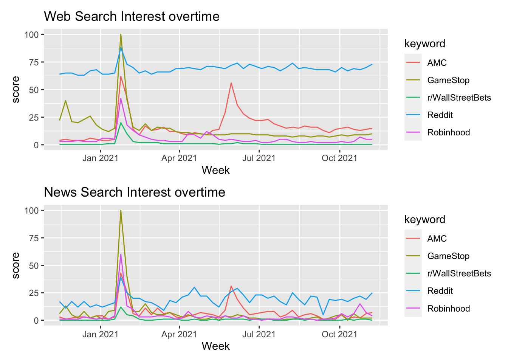

Chapter 5 Results
5.1 What’s the impact of r/wallstreetbet?
5.1.1 General Public’s interests on Google
5.1.1.1 Interest over time
 The above two plots display the interest on the relative topics during the time period 2020-11-15 to 2021-11-15. Numbers represent search interest relative to the highest point on the chart for the given region and time. A value of 100 is the peak popularity for the term. A value of 50 means that the term is half as popular. A score of 0 means there was not enough data for this term.